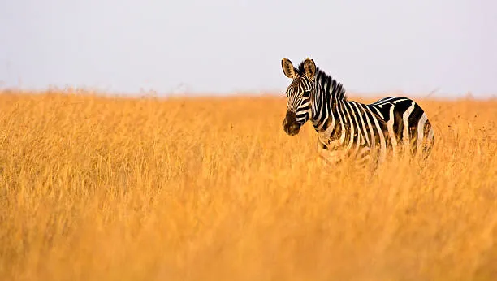
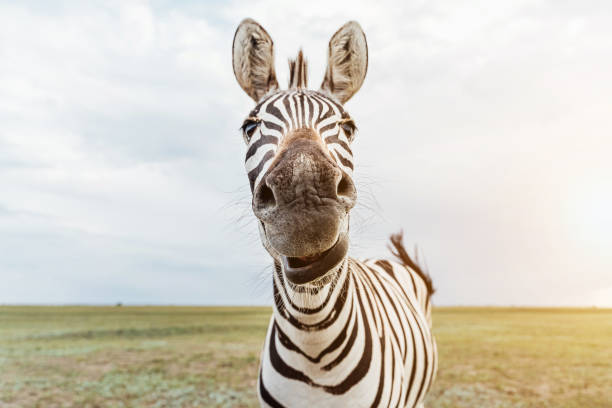
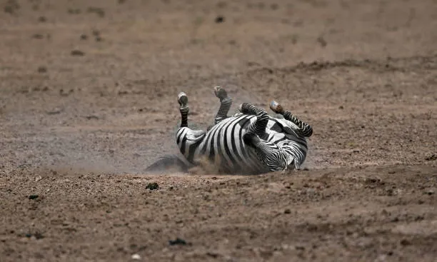

We have heard about zebras, BUT i that you know only 1% of the reality of zebras!!!

This is a website where you can get enlightened about the DAZZLING facts of zebras.
The name DAZZLED came from the word DAZE , whick means to stunned or bewildered .
Thus , when people see a group of zebras, they are DAZZLED by their stripes and beauty.
Then humans thought of a name that would represent the beauty and stripes of zebras, and they came up with the word DAZZLED.
And from there , the name DAZZLED was born.

A zebra is a wild horse-like animal with black and white stripes.
Zebras live in the grasslands and savannas of Africa.
Zebras are herbivores and primarily eat grass.
There are three main species of zebras: the Plains zebra, the Mountain zebra, and the Grevy's zebra. (Note: Click on the species name to learn more about it.)

(zoom plz)Note worth to click here DONT CLICK!
Thanks for your support to me and our fellow DAZZLERS !